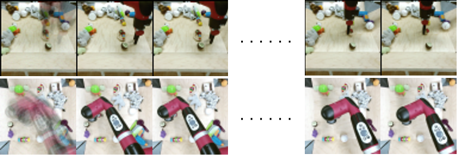

|
Zhihao Zhan I'm the Autonomous Driving Algorithm Leader at TopXGun (Nanjing) Robotics Ltd. in China, where I lead a small team that mostly works on SLAM, Perception, Planning and 3D Reconstruction for UAVs. I hold a M.Sc in Multimedia Infomation Technology from City University of Hong Kong, where I was advised by Prof. CHAN Ho Man and a B.Eng in Electronic Information Engineering from Nanjing Tech University. Mail: zhihazhan2-c [at] my [dot] cityu [dot] edu [dot] hk |

|
ResearchI'm interested in SLAM, Computer Vision, Deep Learning and Generative AI. *: equal contribution; †: corresponding author(s) |
|  |
Wang Pang*, Zhihao Zhan*, Xiang Zhu*, and Yechao Bai† IEEE International Conference on Image Processing (ICIP), 2025 website / arXiv / code We propose a novel single-image deblurring approach that treats motion blur as a temporal averaging phenomenon. Our core innovation lies in leveraging a pre-trained video diffusion transformer model to capture diverse motion dynamics within a latent space. It sidesteps explicit kernel estimation and effectively accommodates diverse motion patterns. |
{kind=link}
ServicesConference Reviewer: IROS (2025). |
|
This website is adapted from Jon Barron's template. |